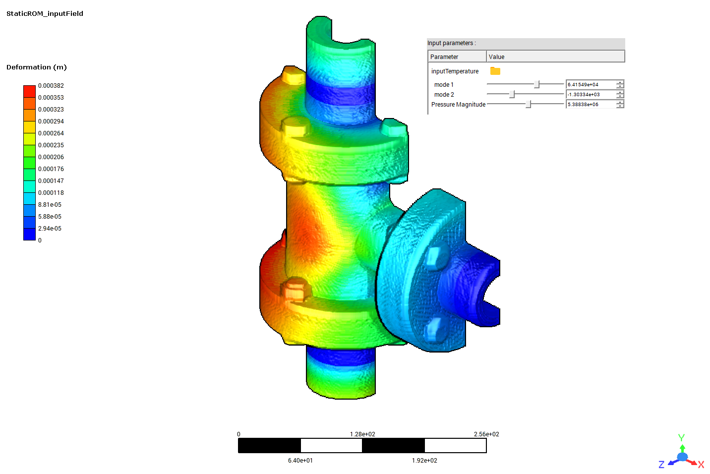
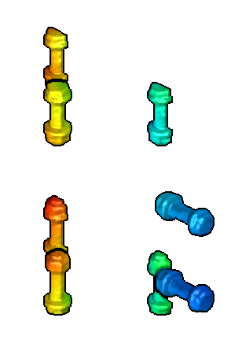
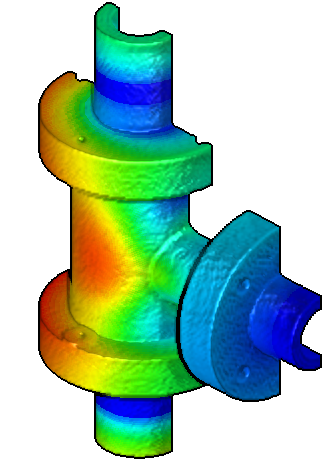
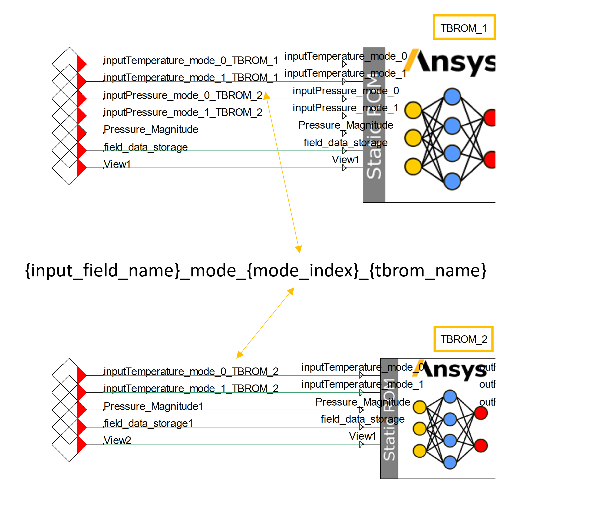
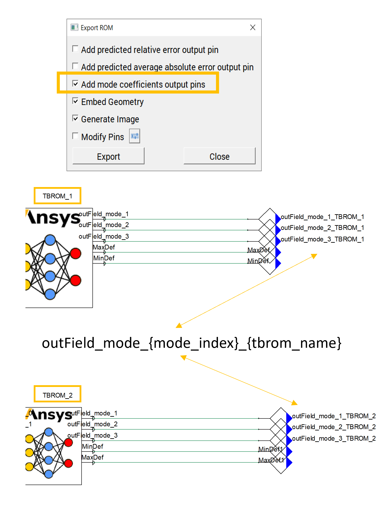
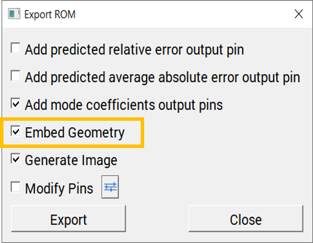
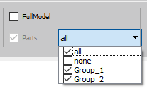
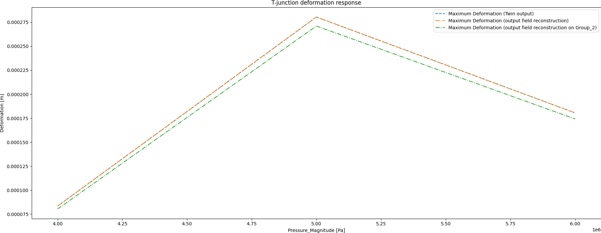
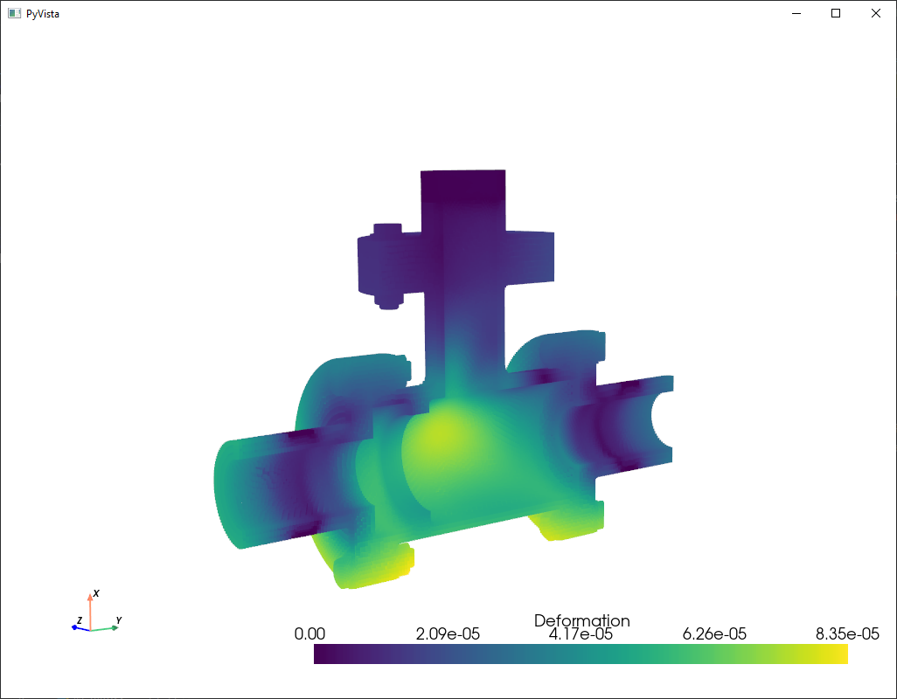

Note
Go to the end to download the full example code
3D field ROM example for input field snapshot projection and snapshot generation on demand#
This example shows how to use PyTwin to load and evaluate a twin model that has a field ROM with inputs parameterized by both scalar and field data. The example also shows how to evaluate the output field data in the form of snapshots.
{kind=link}

# sphinx_gallery_thumbnail_path = '_static/TBROM_input_field.png'
The example model is a valve that takes fluid pressure magnitude as a scalar input and wall temperature as vector input and gives deformation, in meters, as an output.
Results are available on the full model, or can be exported on two subgroups:
Group_1: Bolts
{kind=link}

Group_2: Body
{kind=link}

Note
To be able to use the functionalities to project an input field snapshot, you must have a twin with one or more TBROMs parameterized by input field data. Input mode coefficients for TBROMs are connected to the twin’s inputs following these conventions:
If there are multiple TBROMs in the twin, the format for the name of the twin input must be
{input_field_name}_mode_{mode_index}_{tbrom_name}.If there is a single TBROM in the twin, the format for the name of the twin input must be
{input_field_name}_mode_{mode_index}.
{kind=link}

Note
To be able to use the functionalities to generate an output field snapshot on demand, you must have a twin with one or more TBROMs. The output mode coefficients for the TBROMs must be enabled when exporting the TBROMs and connected to twin outputs following these conventions:
If there are multiple TBROMs in the twin, the format for the name of the twin output must be
outField_mode_{mode_index}_{tbrom_name}.If there is a single TBROM in the twin, the format for the name of the twin output must be
outField_mode_{mode_index}.
{kind=link}

Note
To be able to use the functionalities to generate points file on demand, you need to have a Twin with 1 or more TBROM, for which its geometry is embedded when exporting the TBROMs to Twin Builder
{kind=link}

Note
To be able to use the functionalities to generate points or snapshot on a named selection, you need to have a Twin with 1 or more TBROM, for which Named Selections are defined.
{kind=link}

Perform required imports#
Perform required imports, which include downloading and importing the input files.
import matplotlib.pyplot as plt
import numpy as np
import pandas as pd
from pytwin import TwinModel, download_file
import pyvista as pv
twin_file = download_file("ThermalTBROM_FieldInput_23R1.twin", "twin_files", force_download=True)
inputfieldsnapshots = [
download_file("TEMP_1.bin", "twin_input_files/inputFieldSnapshots", force_download=True),
download_file("TEMP_2.bin", "twin_input_files/inputFieldSnapshots", force_download=True),
download_file("TEMP_3.bin", "twin_input_files/inputFieldSnapshots", force_download=True),
]
Define auxiliary functions#
Define auxiliary functions for comparing and plotting the results from different input values evaluated on the twin model and for computing the norm of the output field.
def plot_result_comparison(results: pd.DataFrame):
"""Compare the results obtained from the different input values evaluated on
the twin model. The results datasets are provided as Pandas dataframes. The
function plots the results for a few variables of particular interest."""
pd.set_option("display.precision", 12)
pd.set_option("display.max_columns", 20)
pd.set_option("display.expand_frame_repr", False)
color = ["g"]
# Output ordering: T_inner, T1_out, T_outer, T2_out, T3_out
x_ind = 0
y0_ind = 2
y1_ind = 3
y2_ind = 4
# Plot simulation results (outputs versus input)
fig, ax = plt.subplots(ncols=1, nrows=1, figsize=(18, 7))
fig.subplots_adjust(hspace=0.5)
fig.set_tight_layout({"pad": 0.0})
axes0 = ax
results.plot(x=x_ind, y=y0_ind, ax=axes0, ls="dashed", label="{}".format("Maximum Deformation (Twin output)"))
results.plot(
x=x_ind, y=y1_ind, ax=axes0, ls="-.", label="{}".format("Maximum Deformation (output field " "reconstruction)")
)
results.plot(
x=x_ind,
y=y2_ind,
ax=axes0,
ls="-.",
label="{}".format("Maximum Deformation (output field reconstruction on Group_2)"),
)
axes0.set_title("T-junction deformation response")
axes0.set_xlabel(results.columns[x_ind] + " [Pa]")
axes0.set_ylabel("Deformation [m]")
# Show plot
plt.show()
def norm_vector_field(field: np.ndarray):
"""Compute the norm of a vector field."""
vec = field.reshape((-1, 3))
return np.sqrt((vec * vec).sum(axis=1))
Define ROM scalar inputs#
Define the ROM scalar inputs.
rom_inputs = [4000000, 5000000, 6000000]
Load the twin runtime and generate displacement results#
Load the twin runtime and generate displacement results from the TBROM.
print("Loading model: {}".format(twin_file))
twin_model = TwinModel(twin_file)
Loading model: C:\Users\ansys\AppData\Local\Temp\TwinExamples\twin_files\ThermalTBROM_FieldInput_23R1.twin
Evaluate the twin with different input values and collect corresponding outputs#
Because the twin is based on a static model, two options can be considered:
Set the initial input value to evaluate and run the initialization function (current approach).
Create an input dataframe considering all input values to evaluate and run the batch function to evaluate. In this case, to execute the transient simulation, a time dimension must be arbitrarily defined.
results = []
input_name_all = list(twin_model.inputs.keys())
output_name_all = list(twin_model.outputs.keys())
# remove the TBROM related pins from the twin's list of inputs and outputs
input_name_without_mcs = []
for i in input_name_all:
if "_mode_" not in i:
input_name_without_mcs.append(i)
print(f"Twin physical inputs : {input_name_without_mcs}")
output_name_without_mcs = []
for i in output_name_all:
if "_mode_" not in i:
output_name_without_mcs.append(i)
print(f"Twin physical outputs : {output_name_without_mcs}")
# initialize the twin and collect information related to the TBROM and input field
print(f"TBROMs part of the twin : {twin_model.tbrom_names}")
romname = twin_model.tbrom_names[0]
print(f"Input fields associated with the TBROM {romname} : {twin_model.get_field_input_names(romname)}")
fieldname = twin_model.get_field_input_names(romname)[0]
print(f"Named selections associated with the TBROM {romname} : {twin_model.get_named_selections(romname)}")
ns = twin_model.get_named_selections(romname)[1]
input_name = input_name_without_mcs[0]
for i in range(0, len(rom_inputs)):
# initialize twin with input values and collect output value
dp = rom_inputs[i]
dp_input = {input_name: dp}
dp_field_input = {romname: {fieldname: inputfieldsnapshots[i]}}
twin_model.initialize_evaluation(inputs=dp_input, field_inputs=dp_field_input)
outputs = [dp]
for item in output_name_without_mcs:
outputs.append(twin_model.outputs[item])
outfield = twin_model.generate_snapshot(romname, False) # generating the field output on the entire domain
outputs.append(max(norm_vector_field(outfield)))
outfieldns = twin_model.generate_snapshot(romname, False, ns) # generating the field output on "Group_2"
outputs.append(max(norm_vector_field(outfieldns)))
results.append(outputs)
points_path = twin_model.generate_points(romname, True) # generating the points file on whole domain
pointsns_path = twin_model.generate_points(romname, True, ns) # generating the points file on "Group_2""
sim_results = pd.DataFrame(
results, columns=[input_name] + output_name_without_mcs + ["MaxDefSnapshot", "MaxDefSnapshotNs"], dtype=float
)
Twin physical inputs : ['Pressure_Magnitude']
Twin physical outputs : ['MinDef', 'MaxDef']
TBROMs part of the twin : ['test23R1_1']
Input fields associated with the TBROM test23R1_1 : ['inputTemperature']
Named selections associated with the TBROM test23R1_1 : ['Group_1', 'Group_2']
Simulate the twin in batch mode#
Reset/re-initialize the twin and run the simulation in batch mode, which passes all the input data, simulates all the data points, and collects all the outputs at once. The snapshots are then generated in a post-processing step.
dp_input = {input_name: rom_inputs[0]}
dp_field_input = {romname: {fieldname: inputfieldsnapshots[0]}}
twin_model.initialize_evaluation(inputs=dp_input, field_inputs=dp_field_input)
# creation of the input DataFrame including input field snapshots
input_df = pd.DataFrame({"Time": [0.0, 1.0, 2.0], input_name_without_mcs[0]: rom_inputs})
batch_results = twin_model.evaluate_batch(inputs_df=input_df, field_inputs={romname: {fieldname: inputfieldsnapshots}})
print(batch_results)
output_snapshots = twin_model.generate_snapshot_batch(batch_results, romname)
Time outField_mode_1 outField_mode_2 outField_mode_3 MinDef MaxDef
0 0.0 0.013545837994 0.000199049416 0.000750513991 0.000006740817 0.000083469219
1 1.0 0.013545837994 0.000199049416 0.000750513991 0.000006740817 0.000083469219
2 2.0 0.045313979521 0.001502593544 -0.000167049957 0.000030702480 0.000280397005
Plot results#
Plot the results.
plot_result_comparison(sim_results)
# Plot the 3D field results on point cloud. To be able to retrieve the PyVista object associated to the field results
# and post process them, you need to have the geometry embedded with the TBROM when exporting it to Twin Builder.
field_data = twin_model.get_tbrom_output_field(romname)
plotter = pv.Plotter()
plotter.set_background("white")
plotter.add_axes()
plotter.add_mesh(field_data, scalar_bar_args={"color": "black"})
plotter.show()

{kind=link}

Total running time of the script: ( 0 minutes 4.677 seconds)